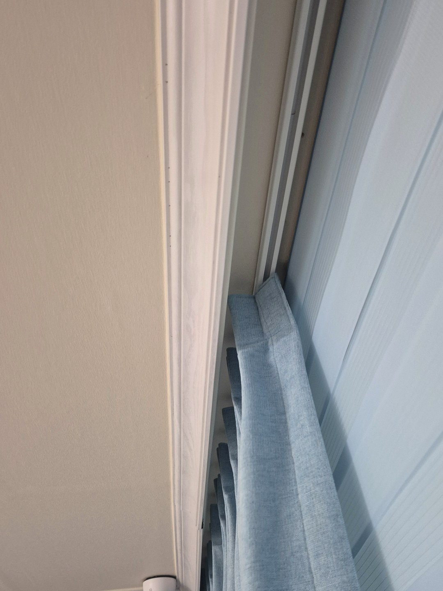
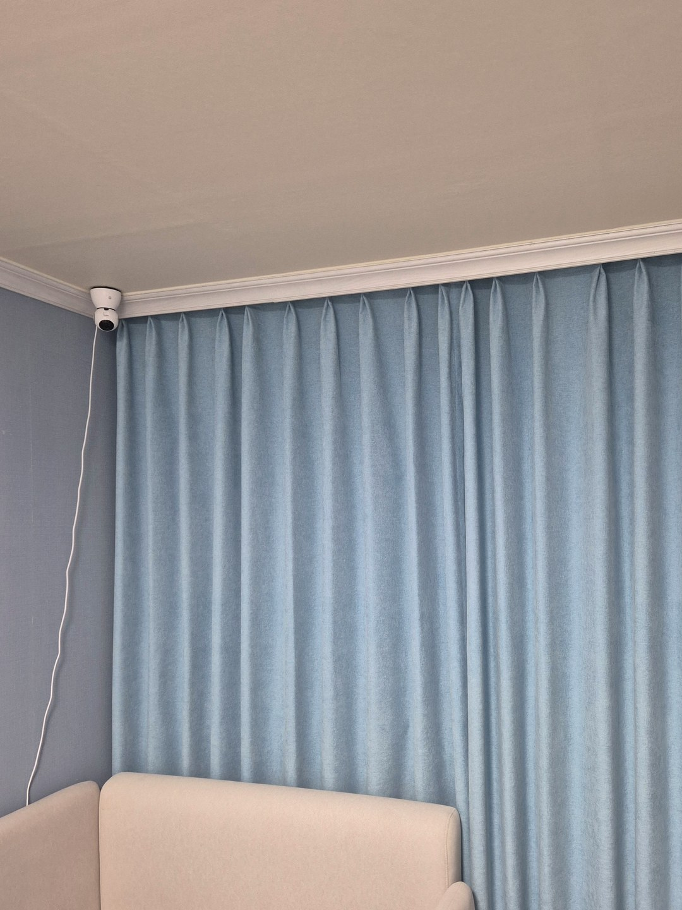

2026년 10월 23일 시공
울진 빌라
블라인드 위 두배 나비주름 암막커튼 시공후기

이번 현장은 울진의 빌라입니다.
창에는 쓰시던 콤비블라인드가 있었고, 상태가 좋아 그대로 쓰기로 하셨습니다.
요청은 밤에 빛을 더 확실히 막을 수 있게
그 앞에 암막커튼을 하나 더 달아 달라는 것이었습니다.
블라인드를 안쪽, 커튼을 바깥쪽에 둔 이유
한 커튼박스 안에 두 제품을 넣을 때는 순서가 중요합니다.
블라인드는 줄로 위아래만 움직이니 유리 가까운 안쪽에 두고,
커튼은 좌우로 크게 여닫으니 방 쪽 바깥에 두었습니다.
이렇게 두면 커튼을 걷어 둔 낮에는 블라인드만으로 빛을 조절하실 수 있습니다.

두배 나비주름을 고른 이유
나비주름은 커튼 위쪽을 일정한 간격으로 집어 주름 모양을 고정한 방식입니다.
원단은 창 폭의 두 배 가까이 넣었습니다.
원단이 넉넉하면 닫았을 때 주름 골이 깊어지고, 암막 원단의 무게로 아래까지 곧게 떨어집니다.
블라인드를 가리지 않게 걷어 둘 때도 주름이 접힌 모양 그대로 모여 옆으로 단정하게 섭니다.

설치 후 알아 두실 점
블라인드 줄은 커튼 뒤쪽에 있어서, 블라인드를 움직이실 때는 커튼을 먼저 옆으로 걷어 주셔야 합니다.
커튼박스 깊이가 얕은 집은 두 제품이 다 들어가지 않을 수 있습니다.
그럴 때는 커튼 레일을 박스 앞 천장에 따로 다는 방법을 함께 검토해 드립니다.
상담 전에 준비해 주시면 좋은 것
창 전체가 나오는 사진 한 장과, 커튼박스 안쪽을 올려다본 사진 한 장을 보내 주세요.
박스 깊이와 지금 달린 제품을 보고 대략적인 견적을 안내해 드립니다.